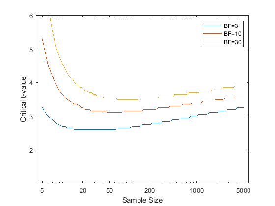
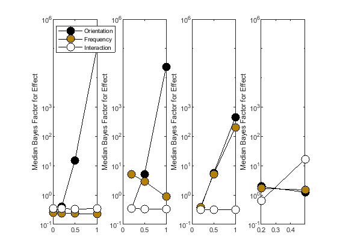
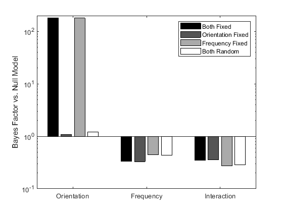
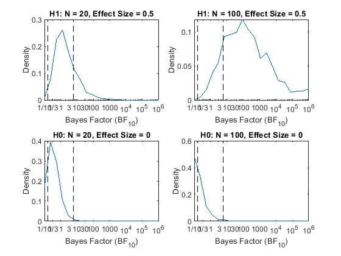
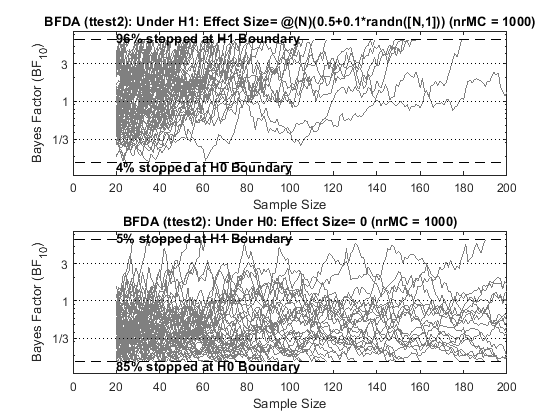
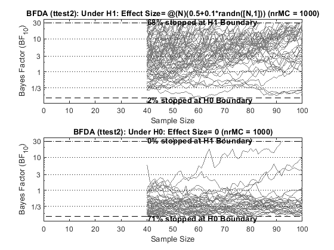

Getting Started with the bayesFactor Toolbox
Contents
- Description
- Download
- Authors & Sources
- System Requirements
- Features
- Installation
- Examples
- Single sample T-Test
- Paired T-Test
- ANOVA
- Repeated Measurements
- Regression
- Show the comparisons
- Figures from Rouder et al. 2012
- Bayes Factor Design Analysis
- Figure 3 in S&W analyzes a Fixed-N design for a two-sample T-test with
Description
Bayesian statistical analysis can help to design experiments that lead to compelling evidence and to quantify the evidence in favor or against a hypothesis, based on a dataset.
This toolbox provides easy-to-use functions to replace (or complement) standard tools for experimental design (e.g. power analysis) and hypothesis testing (e.g. ttest, anova).
Download
Clone or fork the repository from https://github.com/klabhub/bayesFactor
Authors & Sources
The code was written by Bart Krekelberg (bart@vision.rutgers.edu) with some code taken from Sam Schwarzkopf's code and with inspiration from the R package by Richard Morey.
The mathematical underpinning of these analyzes can be found in the following papers:
- Rouder, J. N., Morey, R. D., Speckman, P. L. & Province, J. M. Default Bayes factors for ANOVA designs. J. Math. Psychol. 56, 356?374 (2012).
- Kass, R. E. & Raftery, A. E. Bayes factors. J. Am. Stat. Soc. 90, 733?795 (1995).
- Morey, R. D. & Wagenmakers, E. J. Simple relation between Bayesian order-restricted and point-null hypothesis tests. Stat. Probab. Lett. 92, 121?124 (2014).
- Schoenbrodt, F. D. & Wagenmakers, E. J. Bayes factor design analysis: Planning for compelling evidence. Psychon. Bull. Rev. 1?15 (2017). doi:10.3758/s13423-017-1230-y
System Requirements
This toolbox depends on the Mathworks Statistics and Machine Learning Toolbox https://www.mathworks.com/products/statistics.html
Features
Currently the following statistical tests have been implemented
- One sample t-test (bf.ttest)
- Two sample t-test (bf.ttest2)
- N-Way Anova with fixed and random effects, including continuous co-variates (bf.anova)
- Regression (bf.regression)
- Pearson Correlation (bf.corr)
- Binomial Test (bf.binom)
- Experimental Design & Power Analysis (bf.designAnalysis)
All user accessible functions in this toolbox are defined inside the 'bf' package. This avoids naming conflicts with the standard ttest, ttest2 , etc functions. Function inside bf.internal are not meant to be called directly.
+bf/ - The package, with all user accessible functions docs/ - Documentation examples/ - Example scripts tools/ - Tools for the maintenance of the package
Installation
Place all files and folders in their own folder (e.g. bayesFactor) and then add that folder to your Matlab search path.
The installBayesFactor.m function willl do this for you.
Examples
These examples build on the examples used in the Statistics and Machine Learning Toolbox for traditional (frequentist) hypothesis testing and shows how they can be complemented with Bayesian analysis. The examples folder contains additional scripts with examples.
Single sample T-Test
load stockreturns
[bf10,p] = bf.ttest(stocks(:,3))
bf10 =
2.7158
p =
0.0106
The p-value of the traditional test shows that the stock return was significantly different from zero, but the Bayes Factor shows that the evidence is weak (BF10<3).
Paired T-Test
We are comparing student grades on two exams and want to know whether the grades changed from exam 1 to exam 2.
load examgrades
[bf10,p] = bf.ttest(grades(:,1),grades(:,2))
bf10 =
0.1014
p =
0.9805
The T-test tells us that the Null hypotheses (grades changed) cannot be rejected. The Bayes Factor is more informative, we can convert it to the Bayes Factor for the absence of an effect:
bf01 = 1/bf10
bf01 =
9.8621
Which means that there is strong evidence (BF>6) that there was *no change* in grades (evidence for absence).
ANOVA
Rouder et al 2012 show data for 10 subjects performing a visual detection task. The targets vary in orientation and spatial frequency. These data are stored in table (data) in rouder2012Data.
load rouder2012Data
Analyze full model (linear effects of frequency and orientation plus their interaction)
modelFull = fitlme(data,'rt~ori*freq'); bfFull = bf.anova(data,'rt~ori*freq');
The modelFull is a LinearMixedModel from the Matlab Statistics toolbox. We use it to show the traditional ANOVA table
modelFull.anova
ans =
ANOVA MARGINAL TESTS: DFMETHOD = 'RESIDUAL'
Term FStat DF1 DF2 pValue
'(Intercept)' 485.34 1 36 1.7406e-22
'ori' 6.2245 1 36 0.017324
'freq' 1.8469 1 36 0.1826
'ori:freq' 0.66837 1 36 0.419
The table shows a main effect of ori
The Bayes Factor shows that the Full model is better than the Null model (i.e. intercept only model)
bfFull
bfFull = 16.5823
To specifically look at the evidence for a main effect of orientation, we need to compare the Bayes Factor of the full model to a restricted model in which everything except the main effect of orientation is kept.
bfRestricted = bf.anova(data,'rt~freq +ori:freq'); % Keep main of freq and ori:freq interaction.
The evidence for the main effect is the ratio of the Bayes Factors.
bfMain = bfFull/bfRestricted
bfMain = 179.5458
The evidence is overwhelmingly in favor of a main effect of orientation.
Repeated Measurements
The experiment Rouder et al describe took repeated measurements from the same subject (for each orientation and frequency), but this is not used in the analysis above. If there was large intersubject variability (e.g. some subjects have an overall slow reaction time) then this could reduce the power of the statistical test to detect an effect of orientation. In the example data set there isn't much variation across subjects, so let's introduce some variation to illustrate this.
load rouder2012Data slowSubjects = ismember(data.subject,[1 4 6]); % Lets make subjects 1 4 and 6 slower overall by 0.25s . data{slowSubjects,'rt'} = data.rt(slowSubjects)+0.25;
Calculate the BF and LMM model again
modelFull = fitlme(data,'rt~ori*freq'); bfFull = bf.anova(data,'rt~ori*freq'); bfFull anova(modelFull)
bfFull =
0.5003
ans =
ANOVA MARGINAL TESTS: DFMETHOD = 'RESIDUAL'
Term FStat DF1 DF2 pValue
'(Intercept)' 276.89 1 36 1.7466e-18
'ori' 2.9474 1 36 0.094611
'freq' 0.87453 1 36 0.35594
'ori:freq' 0.31648 1 36 0.57722
That does not seem right; we did not change how orientation affects RT and yet both the BF and the anova show that the effect is no longer significant.
Of course, what is missing is a repeated measures approach. With linear mixed models this is done by including an extra term in the model that captures the idiosyncratic offset in the RT for each subject. In the Wilcoxon formula this is written as (1|subject) : fit a constant term (1) for each level of subject.
modelFull = fitlme(data,'rt~ori*freq + (1|subject)'); bfFull = bf.anova(data,'rt~ori*freq + (1|subject)'); bfFull anova(modelFull)
bfFull =
10.3271
ans =
ANOVA MARGINAL TESTS: DFMETHOD = 'RESIDUAL'
Term FStat DF1 DF2 pValue
'(Intercept)' 276.89 1 36 1.7466e-18
'ori' 5.8533 1 36 0.020727
'freq' 1.7367 1 36 0.19588
'ori:freq' 0.6285 1 36 0.4331
This shows that after including the intercept term for subjects, the Bayes Factor is increased substantially (as are the F values in the ANOVA).
Isolating a main effect while using the repeated measures aspect of the design works analogously:
bfRestricted = bf.anova(data,'rt~freq +ori:freq + (1|subject)');
The evidence for the main effect is the ratio of the Bayes Factors. the difference withbefore is that now both BF have been calculated with the subject random intercept.
bfMain = bfFull/bfRestricted
bfMain = 112.3283
Regression
We analyze the attitude data set (See https://richarddmorey.github.io/BayesFactor/#glm)
load attitude % Compare the rating~complaints model with a set of alternatives. Here we % just evaluate all the models relative to the intercept only alternative % and then take the ratios. models = {'rating~complaints','rating~complaints+learning','rating~complaints+learning+advance','rating~complaints+raises','rating~complaints+privileges','rating~complaints+advance'}; bfAnova = bf.regression(attitude,models);
Show the comparisons
for i=1:numel(models) fprintf('%s vs. %s - Bayes Factor :\t\t\t%3.3f\n',models{i},models{1},bfAnova(i)./bfAnova(1)); % Compare rating~complaints with other models. end
rating~complaints vs. rating~complaints - Bayes Factor : 1.000 rating~complaints+learning vs. rating~complaints - Bayes Factor : 0.423 rating~complaints+learning+advance vs. rating~complaints - Bayes Factor : 0.153 rating~complaints+raises vs. rating~complaints - Bayes Factor : 0.150 rating~complaints+privileges vs. rating~complaints - Bayes Factor : 0.145 rating~complaints+advance vs. rating~complaints - Bayes Factor : 0.140
Figures from Rouder et al. 2012
Much of the mathematical basis for this package is developed in the Rouder et al. paper. To test the package, I recreated some of the figures in their publication.
Figure 2 in Rouder et al compares critical T-values for a traditional t-test with a Bayes Factor analysis.
rouderFigure2;
Figure 4 shows Bayes Factor analysis for simulated data with different effect sizes.
rouderFigure4(100); % Use 100 bootstrap sets .
 Figure 5 illustrates the influence of fixed and random effects
rouderFigure5;
Bayes Factor Design Analysis
Figures from Schoenbrodt & Wagenmakers, a paperthat provides a tutorial treatment of Bayes Factor Design Analysis. See schoenbrodtFigures.m for details. Note that proper distribution estimates would require a larger number of MonteCarlo simulations - here we just run 100 to illustrate the main point.
Figure 3 in S&W analyzes a Fixed-N design for a two-sample T-test with
N=20 and N=100 and a standardized effect size of 0.5.
schoenbrodtFigures(3,1000); % 1000 Monte Carlo sims
*************** N = 20 100 False Positives (%): 0.9 0.9 False Negatives (%): 1.1 0 True Positives (%) 20.9 86.2 True Negatives (%) 20.2 53.4 ************** Necessary sample size for 95% success under H1 is Inf False Positives (%): 0.3 0.3 0.3 0.8 0.4 0.6 0.1 0.3 0.2 0.6 0.4 0.1 0.4 False Negatives (%): 0 0 0 0 0 0 0 0 0 0 0 0 0 True negative (%): 55.2 56.2 61 60.7 59.7 61 60.7 58.9 63.4 63.2 61.9 60.4 61.9
Figure 4 in S&W analyzes a Bayes sequential sampling design. and the use of a distribution of a-priori effect sizes (instead ot a single predicted effect size)
schoenbrodtFigures(4,1000); % 1000 Monte Carlo sims
False Positive Rate: 90.4% False Negative Rate: 3.5% Median Sample Size (H1): 42 Median Sample Size (H0): 45
Figure 5 refines the Sequential design analysis with asymmetric evidence boundaries and a largger minimal N reduces false positives
schoenbrodtFigures(5,1000); % 1000 Monte Carlo sims
False Positive Rate: 71.6% False Negative Rate: 1.7% Median Sample Size (H1): 76 Median Sample Size (H0): 54.5